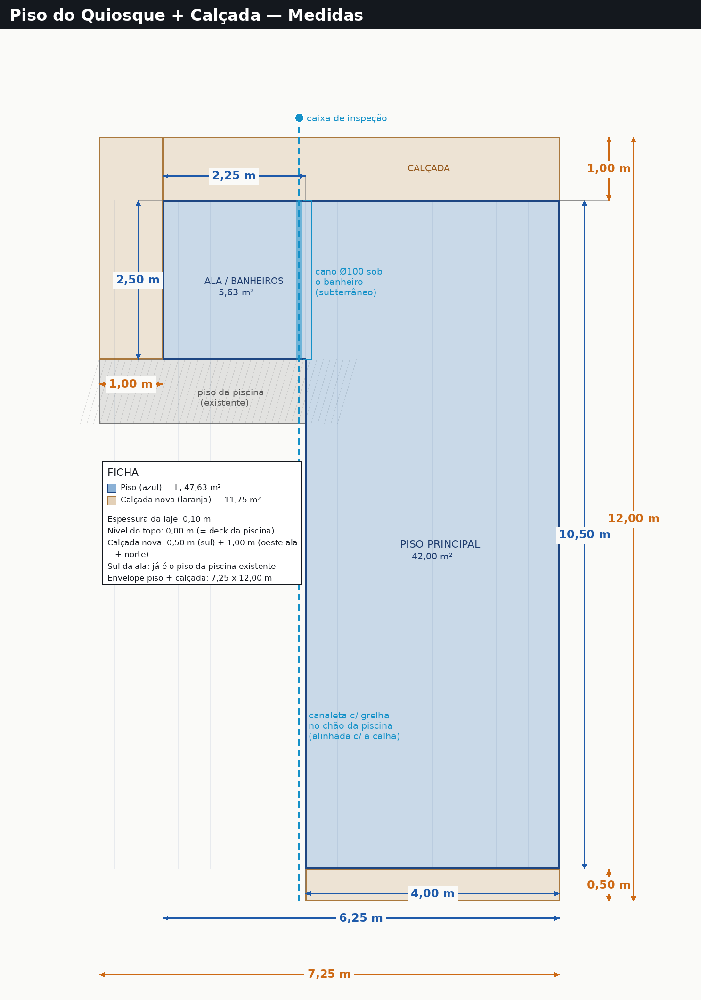
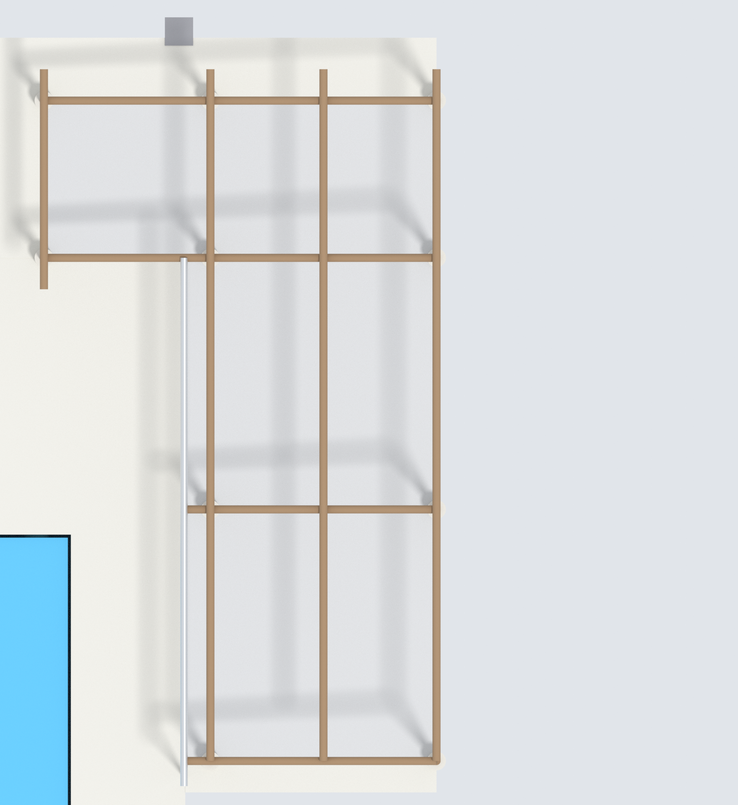
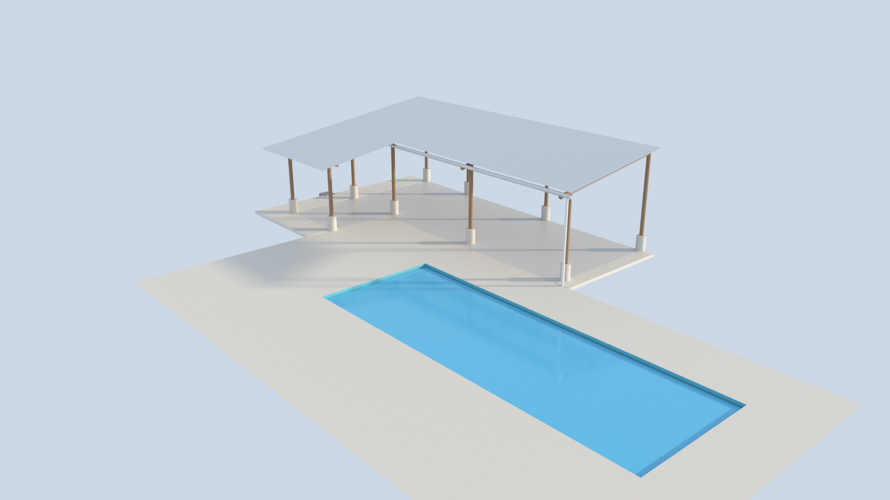
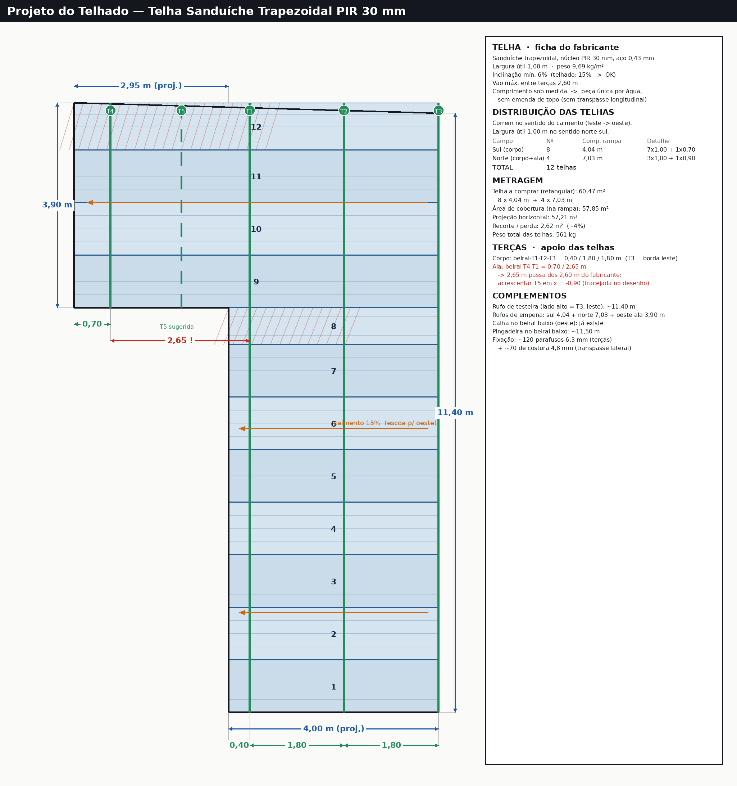
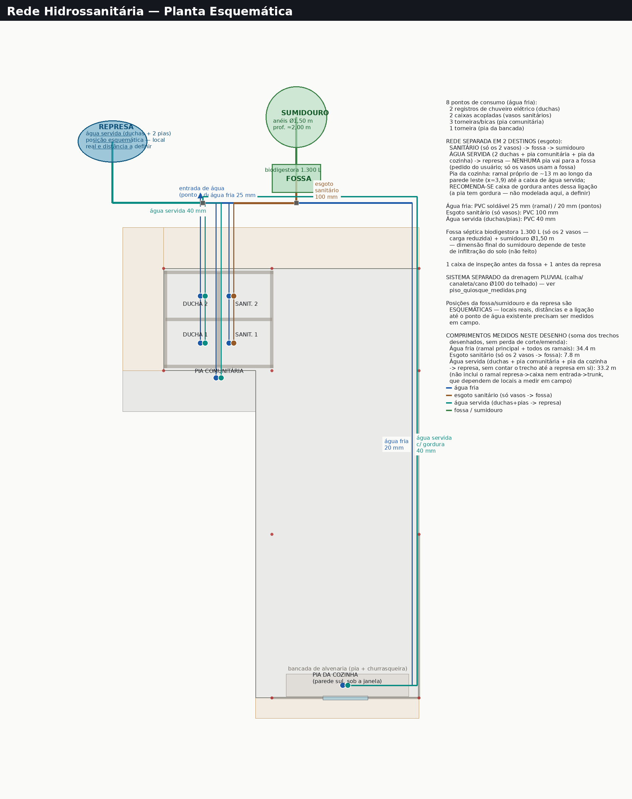
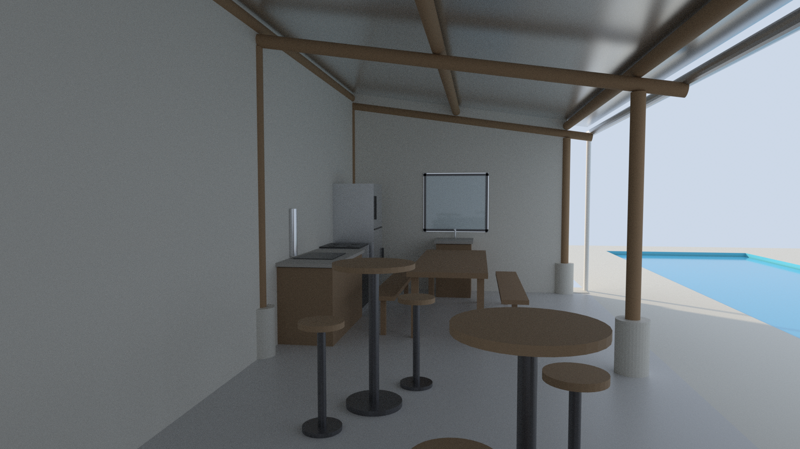

Caderno de obra · página 6 de 6
Sequência de Execução Recomendada
- Radier único (piso do quiosque + calçada perimetral) + cinta de amarração no trecho livre.
- Pedestais de concreto (Ø 0,30 m) nas 10 posições, com chumbadores para a chapa U de cada pilar.
- Montagem dos 10 pilares de eucalipto (12/14) sobre as chapas U fixadas nos pedestais.
- Vigas transversais (12/14) e terças (10/12), formando o caimento de 15% para oeste.
- Assentamento das 12 telhas sanduíche PIR 30 mm sobre as terças.
- Paredes de fechamento em muro tendinoso — sul e leste do corpo, até o telhado.
- Paredes e rede hidrossanitária dos banheiros (ala): esgoto sanitário dos vasos → fossa; água servida das duchas + pia comunitária → represa.
- Portas dos 4 boxes + construção da pia comunitária.
- Bancada, pia, churrasqueira, geladeira e fogão da área gourmet.
- Mobiliário: mesa, bar, sala de estar, TV. Limpeza geral e vistoria final.
Referência visual (modelo 3D — ainda não são fotos de obra em andamento)






Observação
A piscina já existe (construída) e não faz parte do escopo desta obra — a sequência acima cobre só o quiosque. Este caderno reflete o projeto 3D e o levantamento de materiais até o momento da emissão. Medidas devem ser conferidas em campo antes da execução. Consultar responsável técnico para o dimensionamento estrutural definitivo das vigas, terças e fundações.